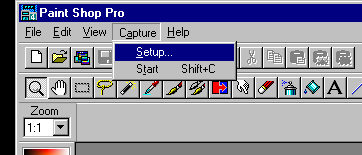
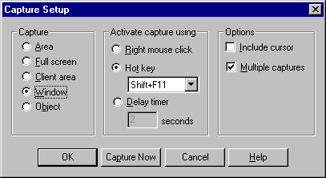
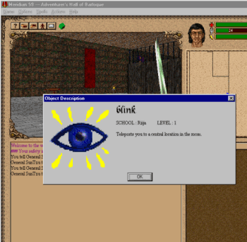
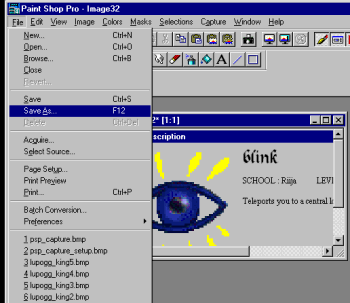
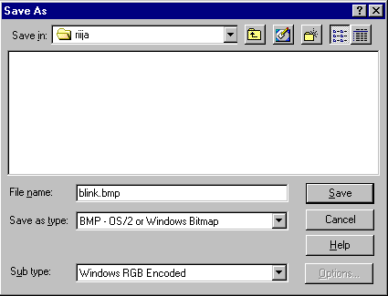

So you want to know how to take easy screenshots to send to me? O'kay, let's see if this helps. =)
- First download Paint Shop Pro 4.14, install it, and then open it.
Well, JASC no longer makes PSP 4.14 available. So your gonna have to find your own graphics program that has screen capture abilities. Your other option is to just use the 'Print Screen' key (it's above the insert key) and then paste your clipboard contents into a graphics viewer/editor. Here is a link to some good graphics programs. Or download the old 3.11 version of PSP, but I don't know much about this version.
- Next select Capture then Setup.

- Then match the following settings:

- Press the Capture Now or the Camera Icon on Paint Shop Pro and the program should minimize itself so you can take a capture of something. If you want to take a capture of the whole Meridian window right at this point, press Shift + F11 Key. You can take more now if you wish by keep continuing to press Shift + F11 Key. They will keep loading into Paint Shop Pro.
- If you want to take a screenshot of of a spell or item right click on the item or spell name and then press Shift & F11 Key

- Now time to save the file as a Windows Bitmap File (.bmp). First goto the Paint Shop Pro program and select Save As... under File

- Lastly type in the name of the file with the .bmp extension and press the Save button.

- Now MAIL THAT SUCKER TO ME!
|